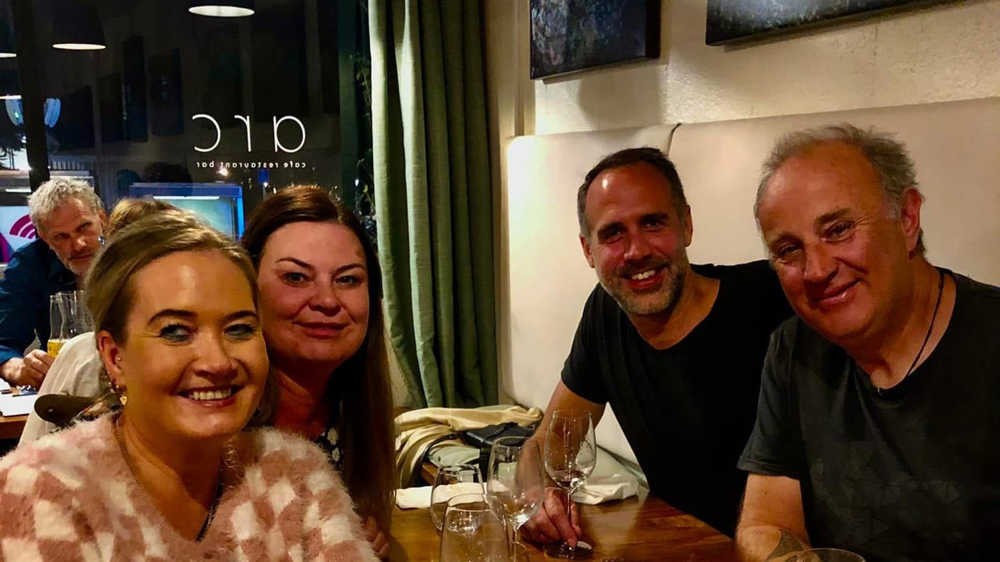

Food:
Experience some of the most gorgeous food to put the perfect end to the already perfect day.
scroll for more
Discover Wanaka's vibrant culinary scene, from lakeside cafes serving fresh local produce to award-winning wineries nestled in the Central Otago region. Experience the perfect blend of international cuisine and New Zealand's finest flavors.
Experience some of the most gorgeous food to put the perfect end to the already perfect day.
Drink up some of the most refreshing drinks to make the summa breeze just enough.